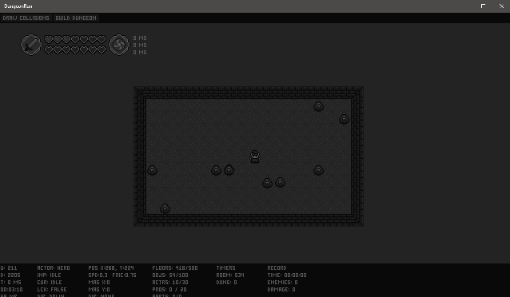
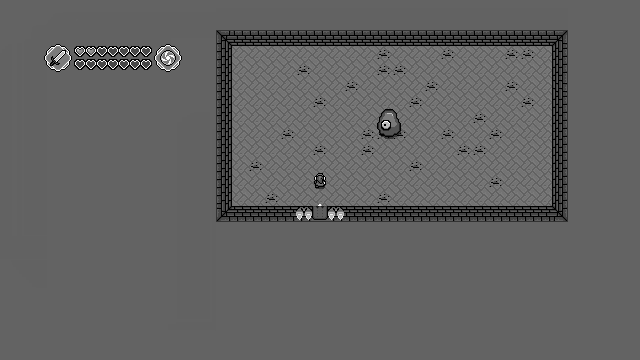
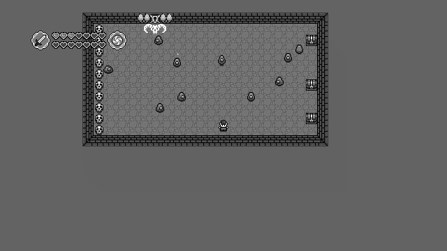
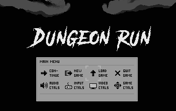
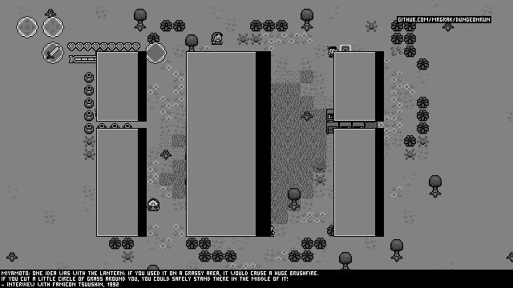
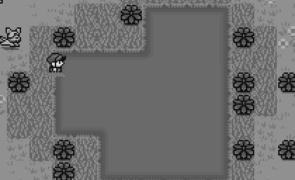

The Shadow King - Making Of
Version 0
The first version of this zelda game was called 'The Cursed Castle'.This game took place on 9 islands, each one of them randomly generated upon boot.
This was done because I got tired of designing islands, and got bored of exploring the same ones.
Development of this project did not complete, primarily due to a critical flaw introduced early on.
I made the design decision to make the default state of the hero the 'swimming state'.
I thought this was smart, since the hero would be swimming so much. This twisted the logic.
After many weeks of development, I ultimately abandoned The Cursed Castle for The Shadow King.
Version 0.1
The Shadow King took everything I learned from The Cursed Castle, and put it on land.This development cycle, I focused on the most used systems first: movement, combat, animation.
The reasoning was: "If I can't get these fundamentals right, there is no reason to continue."
In other words, if combat felt clunky, there was no reason to design and make the inventory menu.
This caused me to focus alot on the basics of the game, and in turn provided a solid foundation.
Early on, it was decided that color would only be added if the game progressed to a worthy point.
Version 0.1 of the game:

At the core of v0.1 are the collision, particle, actor, projectile, animation and gameobj systems.
Version 0.2
Version 0.2 introduced the most basic idea of a dungeon, a room that connects to a boss room.This room was locked behind a boss door, which required a key.
Inside there was a boss actor, which would complete the dungeon upon death.

The inventory menu first appears here as well, which is going for a modern grid design in LttP style.

Version 0.3
Version 0.3 introduced an overworld style fast travel map. The inventory was expanded.Additional items were added, along with moving dungeon objects, like spikeblocks.

Version 0.4
Version 0.4 introduced Vendors and purchasing items and upgrades.This version also begins to show how complicated the interactions were becoming:

Arrows, fireballs, conveyor belts, and a minor physics system all interact in the above animation.
At this point, all interactions were happening inside the collision system.
I wanted to add more items and objects, but doing so caused collision system logic to become very complex.
Version 0.5
Version 0.5 introduced a Title Screen, and made the game feel like a real game.This version also introduced a new room - the Exit Room:

At this point in development, 7 crystals were going to be used to represent completing the 7 dungeons.
There were also going to be stats like attack, defense, speed, health - like a JRPG.
Version 0.6
Version 0.6 introduced a wide screen overworld SuperMarioBros style map.This allowed the player to move between locations as the hero, which I felt played better.
This version also introduced procedurally generated dungeons using a critical path design.

Version 0.7
Version 0.7 was where I decided that the project had reached a critical point.It was now good enough to complete, and I was adding ideas that were new and interesting.


At this point, focus shifted to making new experiences in this 2d zelda format.
Based on research, the original creator of Zelda, Miyamoto talked about a few ideas that didn't make it into Lttp.
Taking those ideas and adding them into my game became the goal.
Here we see fire spreading across grass and trees:

At this point, the interaction system was growing extremely complex, so much refactoring was done.
This refactoring affected many systems, was very time consuming, but laid the foundation for more ideas.
Version 0.72
Version 0.72 introduced ditches, water, swimming, and water traveling through ditches, along with the shovel item.Water traveling through ditches was a Miyamoto idea again - this time coming from a 1992 interview given to Famicon Tsuushin.

Version 0.73
Version 0.73 introduced large scale magic spells, minibosses, more bosses, houses, and a village level.Houses were designed to be destructible based on research and code completed for version 0 - The Cursed Castle.
Version 0.74
Version 0.74 focused on how systems interact, such as actors swimming, diving, while holding objs or not.The pet system was also expanded to allow dogs to swim. Alot of refactoring done.

Version 0.76
Version 0.76 focused on expanding the game's dungeons and bosses and gameplay.Climbing was added, along with backpacking pets. Boat objects were added as well.

Version 0.77
Version 0.77 added color and additional objects, along with dungeon variety.
Version 0.79
Version 0.79 added a ton of polish and bug fixes, along with tons of crazy ideas.